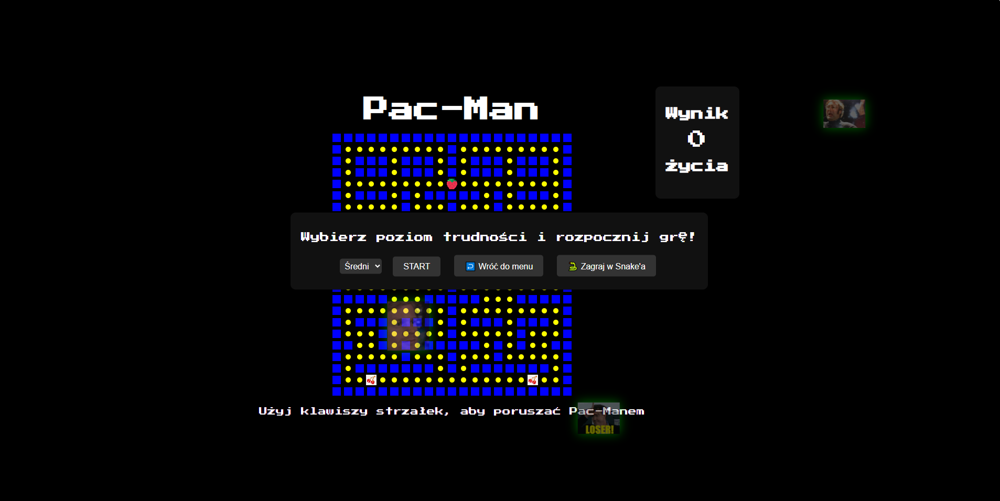

Zestaw klasycznych gier z duszą retro
W ramach projektu przygotowaliśmy grywalne wersje Snake'a oraz Pac-Mana – obie w pełni działające w przeglądarce, inspirowane klasykami z automatów. Ich prostota, grywalność i nostalgiczny klimat to klucz do wciągającej rozgrywki, która działa bez instalacji – tylko HTML, CSS i JavaScript.
Snake oferuje dynamiczne sterowanie, zwiększającą się trudność i licznik wyniku. Z kolei Pac-Man zawiera unikalną mapę, punkty do zebrania, poruszające się duchy oraz losowo pojawiające się owoce (truskawki, wiśnie). Obie gry oferują też poziomy trudności i menu startowe.
Całość opakowana jest w estetykę neonowego retro: czarne tło, jaskrawe kolory i pikselowa czcionka nadają klimat, który idealnie łączy klasykę z nowoczesną technologią. Dodano nawet memowe gify w tle, które nadają całości humorystycznego luzu.
Gra Snake została zaprojektowana tak, by być zrozumiała w sekundę, ale wciągać na dłużej. Sterujesz strzałkami, zbierasz punkty i unikasz zderzeń z samym sobą. Każdy ruch to decyzja, a długość węża staje się wyzwaniem. Gra ma prosty kod, idealny do nauki JavaScript.